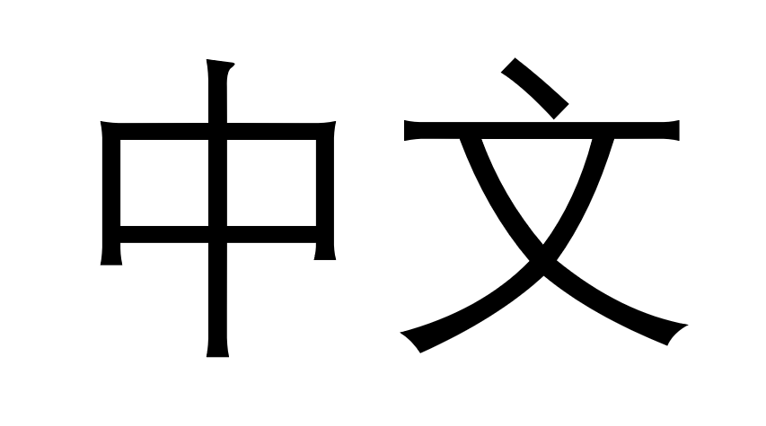
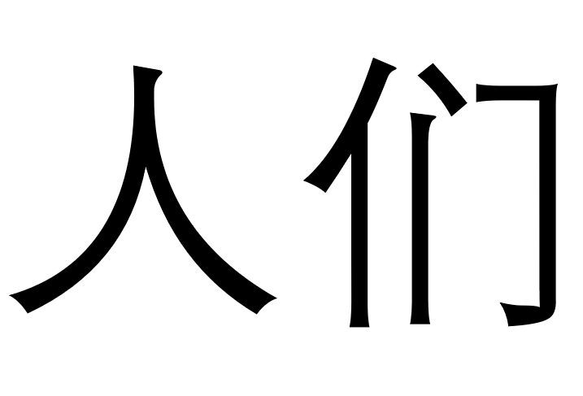
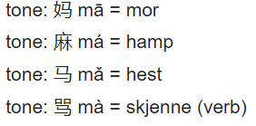
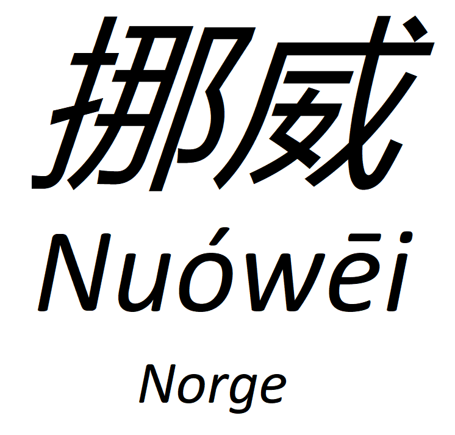

Når mange tenker på det kinesisket språket, tenker man ofte at det er et helt umulig spårk. Det er ikke rart at man tenker sånn. Mange av språkene vi i Norge lærer er i samme spårkfamilie som Norsk. Tenk Tysk, Fransk, Spansk. Kineisk er jo i en helt annen språkfamilie, bruker ikke de samme bokstavene som oss, og har helt annen grammatikk Men når man først begynner å lære, er det ikke så vanskelig som man skulle tro.
I kinesisk er det så godt som ingen grammatisk bøying. Et ord blir brukt likt uansett situasjonen. Snakker jeg om menneske (人rén), bruker jeg samme ordet uansett antall mennesker det er. For å si flere mennesker bruker jeg et annet ord derimot. For å si "mennesker" må jeg legge til -men 们, så 人们. Det kinesiske språket er også veldig fleksibelt. Bindeord og pronomen kan kuttes ned når en betydning blir utrykket. "Jeg liker det" kan bli kuttes ned til "like" hvis noen for eksempel spør deg om du liker noe.
Kinesisk er et tonespråk. Det skiller seg skikkelig fra Europeiske språk med at tonen til et ord bestemmer betydningen til ordet. Du ser sikkert at når kinesisk er skrevet med latinske bokstaver, er det små tegn over et av bokstavene i hvert ord. Dette er aksenttegn. Det er 4 stykker: ā = høy vedvarende tonegang. á = stigende tone. ǎ = fallende så stigende tonegang. à = fallende tonegang. Noen ord kan ha skikkelig forskjellig mening når de har forskjellige toner. Se under:
I kinesisk er det 2 skriftspråk. 汉语 Hànyǔ - Kineiske tegn og 拼音 pīnyīn - fonetisk skrift. Hànyǔ er de kinesiske tegnene vi ser overalt. Hvert tegn er sitt eget ord, men mange tegn blir ofte kombinert for å gi ny betydning. Tegn er lagd opp av radikaler, enkelt sett er det byggeklossene til et tegn. Man kan gjennkjenne like radikaler og former i forskjellige tegn, som kan ofte si noe om betydningen. Pinyin er et skriftspråk brukt for å lære kinesisk. Det er basert på det latinske alfabetet og bruker de tonene vi snakket om før.
